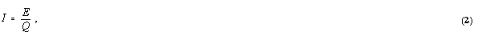

Appendix A discusses survey design, implementation, and estimates.
Appendix B presents the quality of the data.
Appendix C gives descriptions of the manufacturing sector.
Appendix A
Survey Design, Implementation, and Estimates
Introduction
The Energy Information Administration (EIA) designed the 1994 Manufacturing Energy Consumption Survey (MECS) to provide information on the consumption of energy by the manufacturing division, as defined by the Standard Industrial Classification system (SIC) published by US Office of Mangement and Budget.
The MECS began as a triennial survey, with data collected for calendar years 1985, 1988, 1991, and 1994. Federal energy legislation passed in 1992 revised the MECS collection schedule. Beginning in 1994, EIA will conduct the MECS every four years, rather than every three years.
This report about changes in energy intensity is the third report based on the 1994 MECS. Other publications include reports detailing the development of the 1994 survey(1) and the 1994 consumption of energy.(2)
This report includes estimates on changes in energy intensity among MECS survey years -- 1985, 1988, 1991, and 1994. Estimates of energy consumption in 1985, 1988, 1991, and 1994 are calculated using data from the MECS. The Bureau of the Census provided economic data (e.g., value of shipments, value added) collected by the Annual Survey of Manufactures (ASM). The Bureau of Economic Analysis provided chain-weighted, industry-specific price indices. These indices were applied to current dollar value of shipments to obtain value of shipments in 1992 constant dollars.
The basic unit of data collection for the MECS is the manufacturing establishment. A nationally representative sample of these establishments is selected to receive the questionnaire. The EIA provides survey specifications to the Census Bureau, which selects the MECS sample from the list of establishments responding to the ASM, conducts the fieldwork, and handles data processing. The Census Bureau performs these functions to ensure complete confidentiality of individual responses.
This appendix presents a brief overview of the survey, sample design, and estimation procedures for the 1994 MECS. In addition to this appendix, a methodological report published in 1992 presents a nonstatistical description of sample selection issues for the 1991 survey. And a methodological report published for the 1985 survey presents details relating to the background of the maiden survey, original forms design, sample design, and estimation procedures. This appendix presents a brief overview of the survey, sample design, and estimation procedures. For a detailed review of the sampling methodologies used for each MECS, please reference the appropriate consumption report. For example, the EIA report Manufacturing Consumption of Energy 1994, DOE/EIA-0512(94) serves as the sampling reference for the 1994 MECS.
The Estimation Process
The MECS sample represents the portion of manufactures in the manufacturing universe covered by the ASM mail sample. This portion, when sampled establishments are weighted up, accounts for approximately 98 percent of total manufacturing value of shipments and receipts. Weighing up inflates reported values from the sample to that portion of the population it represents. Multiplying a reported or derived value by an establishment-specific sample weight inflates the reported values to population values. Each establishment included in the MECS sample has an associated sampling weight with two components: sample weight and adjustment factor for nonresponse. The first component is the reciprocal of the establishment's overall probability of selection into the ASM and subsequent selection for the MECS.
The second component of the sampling weight addresses
questionnaire nonresponse by establishments sent a MECS form but, for whatever reasons,
did not respond. An establishment is selected into the MECS sample with a probability
proportional to its energy measure of size. In effect, the estimated contribution each
establishment makes to total manufacturing energy consumption is its measure of size.
Adjustment factors for nonresponse are calculated using the known energy measures of size
of the respondents and the entire sample. ASM or Census of Manufactures (CM) data provide
this information. Each of the sampling strata has a separate adjustment factor:
where MOSs,j is the measure of size for MECS
sample establishment j in stratum s. In this formula, MOS s,i
is the measure of size for MECS respondent I in stratum s. The MOS
is determined using ASM reported cost of fuels and electrical energy.
This nonresponse adjustment is important for interpreting aggregate statistics such as consumption and fuel-switching capability; however, it does not affect energy intensity measures, as shown in the next section.
The Concept of Energy Intensity
Technical Approach
Previous MECS energy-intensity reports identified the change in energy intensity resulting
from more or less Offsite-Produced Energy. This report also presents the changes in energy
intensity caused by either increased or decreased use of energy sources produced at
manufacturing establishments. In addition, this report includes changes in intensity that
result from the changes in relative output by industries (i.e., structural shifts). As in
previous reports, output is defined as the constant dollar value of shipments and
receipts. These were expressed in terms of constant 1982 or 1987 dollars for the previous
reports. This report uses constant 1992 dollars.
Comparing ratios of the amount of energy consumed per a common unit of output over a specified period identifies trends. The MECS reports trends for the 2-digit SIC codes in question and the entire manufacturing sector. These demand ratios, traditionally termed energy intensities, take the general form of:

where E denotes energy consumption, and Q represents output. Subsets of the manufacturing sector (e.g., 2-digit SIC categories) and the entire manufacturing sector had separate measures of energy intensity calculated. This was done because each subset had a common unit for consumption and output.
With energy intensities available for two periods, the raw change in the demand for energy between base year, b, and the nth subsequent year, b+n can be expressed as:
To streamline the display of the change in aggregate energy intensities, D Ib:b+n is generally presented with respect to the base year's energy intensity. This is written as:
Evaluation of the Effects on Energy Demand
The manufacturing sector continually evolves. Evidence of this is the growth of some industries while other industries become less important. Examples include the decline of wagon makers when automobiles became available. A more current example is the growth of the compact disc industry with the subsequent decline of the LP record and eight-track tape industries. This evolution requires that any analytical approach for measuring changes in energy demand take two factors into account: The approach must cleanly attribute the effect on energy demand associated with structural shifts, as well as the effect of real efficiency changes. This approach produces both an estimated value of real efficiency improvements as well as an estimate of variations in manufacturing composition (structural shifts). Currently, there are two predominant approaches used to disentangle aggregate changes in energy demand: the Divisia(3) and the Laspeyres(4) indices approaches. Several energy analysts--Jenna et al,(5) Marlay,(6) EIA,(7) and most recently, Howarth et al(8)--have used the Divisia approach to separate real energy efficiencies from structural shifts. However, for this report, EIA applied the Laspeyres technique, favoring the Laspeyres' ease of interpretation. This approach cleanly decomposes the aggregate change in energy intensity into three effects: structural shifts, real efficiency changes, and an interaction of structural shifts and real efficiency changes. In contrast, the Divisia approach identifies only main effects.(9) In addition, EIA and Howarth et al(10) have shown that Laspeyres and Divisia derived estimates of the decomposed effects are remarkably similar. EIA has also derived a measure of reliability for decomposed effects under the Laspeyres approach.(11)
This report uses the Laspeyres approach to decompose the aggregate change in energy intensities. The decomposition results in real efficiency changes, structural shifts, and the interaction of real efficiency changes and structural shifts. To accomplish this, rewrite the energy intensity ratio given in Equation (3) as:
where the subscript j represents an industry group of subsector S. Es and Qs denote the energy consumption and output of the sth industry group belonging in subsector S. Substituting Equation (5) into Equation (3) yields:
What Groups are Used for Reapportionment? Groupings are determined by the base year b. Hence, a comparison between 1985 and 1994 intensities would employ the 1985 groups because the base year is 1985. For a base year of 1985, 83 groups of three-digit industries or combinations of three-digit industry groups are employed to reapportion energy intensities. Likewise, reapportionment with a base year of 1988 uses the identical 83 groups. Because of the increase in sample size for the 1991 MECS, base year of 1991 comparisons use 98 groups. |
The Laspeyres approach reapportions Ib+n to reflect the production shares, by industry group, that existed during the base year b. This is to separate the effect of structural shifts observed in manufacturing output, as measured by the difference in production shares of industry groups belonging to subsector S. For this report, SIC codes were aggregated into 83 groups of three-digit industries or combinations of three-digit industry groups to provide estimates of energy consumption sufficiently accurate for analysis.
With the effect of structural shifts removed, the adjusted energy intensity I(int)b+n is expressed as:
The "pure" change in energy demand related to
improvements in energy efficiency is expressed as:
The "pure" changes in energy demand associated with structural (production) shifts are given by reflecting the energy intensities, by industry group, that existed during the base year, b. This change is expressed as:

Measures of Energy Consumption
The MECS consumption of energy reports include, among others,
tables identifying four different measures of energy consumption. These include:
This report identifies two measures of energy intensity by
selected SIC codes. The first measure is Offsite-Produced Energy for heat, power, and
electricity per constant 1992 dollar of products shipped. The second measure of intensity
is Total Inputs of Energy for heat, power, and electricity per constant 1992 dollar of
products shipped.
For each SIC, the difference between the quantities reported as Total Inputs of
Energy for heat, power, and electricity and the quantities reported as Offsite-Produced
Energy consumed for those same purposes indicates the amount of energy produced and then
consumed onsite. Comparing changes in energy intensity based on these two measures
indicates the effect of Onsite-Produced Energy sources on intensity changes. Any
difference between intensities based on the two measures would imply the increased
(decreased) use of Onsite-Produced Energy.
Energy efficiency cannot be inferred directly from changes in energy-intensity
ratios. While improved energy efficiency does indicate reduced energy intensity,
it is also true that a change in energy intensity can result from factors unrelated to
energy efficiency. Energy produced onsite and structural shifts in production mix are two
of those factors.
Measures of Output
Potential Adjustments to Value of Shipments There exist adjustments to value of shipments as a measure of output. However, this report has not addressed those issues directly due to publishing constraints. One basic adjustment has been excluded from shipment data: changes in manufacturing inventory. Because value of shipments estimates do not account for changes in inventory, dramatic fluctuations in beginning and ending inventories may result in the misinterpretation of a change in intensity. EIA plans to address this issue in an upcoming report. |
In order to calculate an industry's change in energy intensity, it is necessary to have some common measure of output to compare with energy consumption. Since the outputs of manufacturing establishments are physical units, these might appear to be the most appropriate measure. However, one major problem with using a physical measure of output is that it cannot be standardized within an industry or across industries. A single manufacturing establishment or industry may produce a wide variety of end products. These products would have to be aggregated to calculate the change in intensity. In SIC 22 (Textiles), for example, adding the quantity of cheesecloth produced in SIC 2211 to the quantity of fabric produced in SIC 2221 would not yield any meaningful measure of output. This difficulty with using a physical measure of output encourages the use of an economic measure as a proxy. The Census Bureau collects data on the value of shipments and receipts of manufacturers as well as the value added by manufactures. Because the MECS sample is drawn from the list of establishments covered by the CM and ASM, these economic data are available for establishments that respond to the MECS.
If the goal were to calculate the total output of the entire manufacturing sector, value added would be the appropriate economic measure to use. This measure represents the unique contribution of a manufacturer to the production of a finished good. Calculation of value added requires subtracting the cost of all materials from the value of shipments. This is then added to the net change in finished goods and work in progress inventory. Basically, value added consists of wages and employee supplements, net interest, indirect business taxes and adjustments, and income or corporate profits.(12)
Value of shipments and receipts consists of the total receipts for products manufactured, services rendered, and the resales of products bought and sold without further manufacture. It is the dollar value received by the manufacture for the products it sells. For any industry group, this measure contains a large amount of duplication since the product outputs of one industry may be used as raw material inputs by others. For example, a manufacturer of copper wire may sell that wire to another manufacturer that builds electric motors. The electric motor manufacturer may, in turn, sell electric motors to a manufacturer that assembles refrigerators. Thus, the cost of the copper wire, which originated with the first manufacturer, appears in the value of shipments for all three. Summing the values of shipments for these three manufacturers would contain duplication of the cost of the copper wire. Because of this duplication, total manufacturing sector output is not the summation of individual industry groups' value of shipments. For the same reason, it is not accurate to compare changes in intensity across SIC codes but only between a single SIC grouping or the entire manufacturing sector.
The duplication inherent in the value of shipments measure is not an important consideration when calculating changes in intensity. The purpose is not to compare the efficiency ratios between industries, but rather, to compare energy consumption per unit of output at different points in time for each industry group. In most cases, whatever duplication existed in the base year will also be present in the comparison years. Value added as a percent of the value of shipments in this case is approximately equal for the base and comparison years. If industry groups have perfectly stable proportions of value added to value of shipments, the same estimate of energy intensity change will result regardless of whether the base is the value of shipments or value added.
If value added as a proportion of value of shipments differs between the base and comparison years, constant dollar value of shipments more closely approximates physical production than does constant dollar value added, according to previous studies.(13) For this reason, the proxy measure of output for calculating energy intensity ratios included in this report is constant dollar value of shipments. This surrogate for physical output is fully consistent with the procedures adopted by other Federal agencies for estimating output. The Bureau of Labor Statistics (BLS) publishes a productivity measure known as "output per employee hour." Dividing an output index by an index of aggregate employee hours for a given industry produces this index. According to the BLS,
"...industry output indexes are based on quantifiable units of products or services of the industry.... Whenever possible, physical quantities are used as the unit of measurement. For those industries lacking quantity data, constant-dollar value of shipments, sales, or revenue data are used to develop the output series."(14)
This report investigates structural shifts as one reason energy
intensity may have changed between the years in question. Calculation of these shifts was
done at the lowest possible level (four-digit, then three-digit, then two-digit SIC). The
sample size for the 1985 and 1988 MECS surveys was relatively small. Because of
this, it was not possible to provide energy consumption estimates for any but the 10
largest four-digit industries. In addition, the samples were too small to produce accurate
estimates of energy consumption for all of the three-digit industries. Letting both
structural and intensity vary does not lend any additional significant interpretations.
This interaction can be algebraically expressed as:
The change in aggregate energy demand is now written as:
With respect to the base year energy intensity, the percentage change of energy demand for each effect is expressed as:
For this report, SICs were aggregated into selected groups of
three-digit industries or combinations of three-digit industry groups to provide estimates
of energy consumption sufficiently accurate for analysis. The change in intensity for the
entire manufacturing sector is adjusted based on the shipments-weighted contributions of
these groups. For each of the two-digit major industry groups, changes in energy intensity
are adjusted based on the shipments-weighted contributions of the 3-digit industries
included in that major group.
Appendix B
Quality of the Data
Introduction
All data collection activities and the estimates
produced from them are subject to a variety of errors. The two general types of errors are
sampling and nonsampling errors.
Sampling error is the variability in a survey estimator that occurs because data are
collected from a sample of units rather than from the entire population. A different
estimate of population parameters is possible from each potential sample. Nonsampling
errors are those associated with all aspects of the total survey design other than the
sampling process. Nonsampling errors can include both random and systematic (biasing)
errors. Commonly recognized sources of nonsampling error include undercoverage, random and
systematic response errors, nonresponse, data processing errors, and tabulation errors.
This appendix describes the effect of both sampling and nonsampling errors on the
estimates of energy-intensity change.
Sampling Error
Gathering data from samples of the population (survey) rather than the entire population (census) results in estimates that differ from true population estimates. The MECS is a survey, and as such, provides only one of a possible number of estimates. Estimates from other samples would differ depending on which establishments are in each sample.
One measure of the variability in estimates due to sampling is the average squared differences between the estimates by all possible samples and the mean value of those estimates. This type of measure is known as sampling error, and identifies the magnitude of sampling error. A single sample provides data to obtain the standard error of an estimate.
RSE Tables 1-2 of this appendix present standard errors computed for the estimated energy efficiency changes. Using pre-existing data, the estimates are calculated as relative standard errors (RSE's), and converted to standard errors.
Computation of Relative Standard Errors
The relative variances and covariences of energy consumption are the primary information required for the development of RSE's. The constant dollar value of shipments and estimated change in energy intensity are additional information used in the calculations. To calculate RSE's, the standard error is multiplied by 100, then divided by the estimate to which it refers. Approximate RSE's are computed using a specially-derived formula. The following paragraphs describe the derivation of the formula.
Ignoring the multiplier of 100, the change in energy efficiency for an industry group given in Equation (4) of Appendix A is:
The object is to derive an approximate RSE for the change in energy intensity. The derivation begins:
where RSE2 is the relative variance, or rel-variance.
By definition of the rel-variance,
Equation (16) can be restated as:
Since the variance of a constant and the covariance of a constant and a variable are equal to zero, Equation (17) reduces to:
Expressing Equation (16) in terms of the rel-variance,
By Hansen, Hurwitz, and Madlow,(15) the rel-variance of a ratio can be approximated using the rel-variances and the rel-covariance of the components. Applying the approximation of Hansen et al., Equation (19) becomes:
Sample selections for the 1994, 1991, 1988, and 1985 MECS are independent of sample selection for the 1994 ASM. Because of this, the relative covariance in Equation (20) between the two ratios is assumed to be zero. Equation (18) reduces to:
The two rel-variances in Equation (21) are the rel-variances of
the energy-intensity ratios for any industry group s in periods b and b
+ n (b may equal 85 or 88 or 91). The approximation of Hansen et al. is used again.
The rel-variances in Equation (19) may be approximated as:
and
The four MECS collections provide the components of these rel-variances, as well as information provided by the Census Bureau. Estimates of the rel-variances are substituted into Equation (21) to derive the RSE's of the estimated changes in energy intensity. Standard errors for Tables 1-12 are calculated by dividing these RSE's by 100 and multiplying by the corresponding estimate of intensity change.
| Relative Standard Errors for Energy Intensity | |||||
|---|---|---|---|---|---|
| SIC Code | Major Group | 1985 | 1988 | 1991 | 1994 |
| 20 | Food and Kindred Products | 7 | 4 | 3 | 3 |
| 21 | Tobacco Products | 3 | 4 | 3 | 11 |
| 22 | Textile Mill Products | 3 | 3 | 3 | 5 |
| 23 | Apparel and Other Textile Products | 16 | 13 | 8 | 34 |
| 24 | Lumber and Wood Products | 11 | 11 | 8 | 8 |
| 25 | Furniture and Fixtures | 5 | 5 | 7 | 5 |
| 26 | Paper and Allied Products | 5 | 5 | 3 | 2 |
| 27 | Printing and Publishing | 6 | 6 | 7 | 5 |
| 28 | Chemicals and Allied Products | 5 | 6 | 4 | 3 |
| 29 | Petroleum and Coal Products | 2 | 2 | 1 | 2 |
| 30 | Rubber and Misc. Plastics Products | 3 | 3 | 3 | 2 |
| 31 | Leather and Leather Products | 11 | 11 | 13 | 11 |
| 32 | Stone, Clay and Glass Products | 6 | 5 | 5 | 4 |
| 33 | Primary Metal Industries | 4 | 4 | 2 | 3 |
| 34 | Fabricated Metal Products | 7 | 6 | 3 | 6 |
| 35 | Industrial Machinery and Equipment | 4 | 5 | 3 | 4 |
| 36 | Electronic and Other Electric Equipment | 4 | 4 | 6 | 8 |
| 37 | Transportation Equipment | 2 | 2 | 1 | 4 |
| 38 | Instruments and Related Products | 7 | 7 | 6 | 10 |
| 39 | Misc. Manufacturing Industries | 6 | 7 | 5 | 15 |
| Total | 2 | 1 | 1 | 2 | |
| Relative Standard Errors for Energy Intensity | |||||
|---|---|---|---|---|---|
| SIC Code | Major Group | 1985 | 1988 | 1991 | 1994 |
| 20 | Food and Kindred Products | 8 | 4 | 4 | 3 |
| 21 | Tobacco Products | 3 | 4 | 3 | 10 |
| 22 | Textile Mill Products | 3 | 3 | 3 | 5 |
| 23 | Apparel and Other Textile Products | 16 | 13 | 8 | 34 |
| 24 | Lumber and Wood Products | 12 | 12 | 9 | 8 |
| 25 | Furniture and Fixtures | 5 | 6 | 14 | 5 |
| 26 | Paper and Allied Products | 6 | 6 | 3 | 2 |
| 27 | Printing and Publishing | 6 | 6 | 7 | 5 |
| 28 | Chemicals and Allied Products | 5 | 6 | 4 | 3 |
| 29 | Petroleum and Coal Products | 2 | 1 | 1 | 2 |
| 30 | Rubber and Misc. Plastics Products | 3 | 3 | 3 | 2 |
| 31 | Leather and Leather Products | 11 | 11 | 13 | 11 |
| 32 | Stone, Clay and Glass Products | 6 | 5 | 5 | 4 |
| 33 | Primary Metal Industries | 4 | 4 | 2 | 4 |
| 34 | Fabricated Metal Products | 7 | 6 | 3 | 6 |
| 35 | Industrial Machinery and Equipment | 4 | 5 | 3 | 4 |
| 36 | Electronic and Other Electric Equipment | 4 | 4 | 6 | 8 |
| 37 | Transportation Equipment | 2 | 2 | 1 | 4 |
| 38 | Instruments and Related Products | 7 | 7 | 6 | 10 |
| 39 | Misc. Manufacturing Industries | 8 | 7 | 6 | 15 |
| Total | 2 | 2 | 1 | 2 | |
Nonsampling Errors and Bias
Nonsampling errors are not associated with obtaining data through a sample rather than a complete census. These errors can occur in any data gathering activity and fall into four general categories:
Minimizing Errors
MECS uses several methods to ensure accurate estimates. These include:
No editing procedure can identify all measurement errors, and it
is reasonable to assume some small errors are not corrected. To the extent these errors
are due to random rather than systematic misreporting, they are compensating in the
aggregate totals calculated. Very few large systematic biases for the MECS result from
unidentified measurement errors.
Estimation errors can result from any of the assumptions used to estimate the consumption
of Offsite-Produced Energy or Total Inputs of Energy consumed for heat, power, or
electricity generation. These are the two measures of consumption used in calculating the
changes in energy intensity included in this report. Both Offsite-Produced Energy and
Total Inputs of Energy are derived measures of consumption rather than reported values.
They are both based on two primary assumptions:
It is believed these assumptions accurately reflect the energy-use patterns of the most manufacturing establishments.
Consumption estimates will be biased if the above assumptions are
incorrect. For example, one assumption is that energy produced onsite meets feedstock
requirements before fuel requirements. This could result in consistently underestimating
the consumption of offsite-produced feedstocks and overestimating the consumption of
offsite-produced fuels. If this were the case, an overestimation of the energy intensity
ratios is the result.
If derived values are calculated using a consistent methodology from one survey cycle to
the next, any bias due to estimation errors will be present to approximately the same
degree in both cycles. Because the primary focus of this report is the change in energy
intensity ratios from one period to another, persistent bias would eliminate itself. As
such, it is believed that bias in the changes in energy intensity due to estimation errors
is minimal.
Appendix A describes the MECS survey and explains that portion of the manufacturing sector
it represents (i.e., the mail portion of the ASM, with the exception of the 1988 MECS).
For this report, adjusted consumption values represent those three-digit industry groups,
or combinations of three-digit industry groups, judged sufficiently accurate for the
purposes of this analysis. Noncoverage errors could result from the procedures used to
define these groups. Adjustments are made to account for nonresponses. These involve a
ratio adjustment of the weighted data for respondents. Small establishments tend to have
the highest nonresponse rate to the MECS. Because of this, the adjustment primarily
affects the contribution of relatively small establishments. Without this adjustment, the
MECS estimators produced from only the responding establishments would not have
represented the target universe. Unadjusted estimators would also result in biased survey
estimates.
Appendix C
Descriptions of Major Manufacturing Groups
This appendix contains descriptions of the major manufacturing groups included in the 1994 MECS. The 1987 Standard Industrial Classification Manual (SIC Manual) provides these descriptions, which cover the 20 major groups (2-digit SIC).
SIC 20 - Food and Kindred Products: This major group includes establishments manufacturing foods and beverages for human consumption and certain related products such as manufactured ice, chewing gum, vegetable and animal fats and oils, and prepared feeds for animals and fowls.
SIC 21 - Tobacco Products: This major group includes establishments engaged in manufacturing cigarettes, cigars, smoking and chewing tobacco, snuff, and reconstituted tobacco and in stemming and redrying tobacco.
SIC 22 - Textile Mill Products: This major group includes establishments engaged in performing any of the following operations: (1) preparation of fiber and subsequently manufacturing of yarn, thread, braids, twine, or cordage; (2) manufacturing broadwoven fabrics, narrow woven fabrics, knit fabrics, and carpets and rugs from yarn; (3) dyeing and finishing fiber, yarn, fabrics, and knit apparel; (4) coating, waterproofing, or otherwise treating fabrics; (5) the integrated manufacture of knit apparel and other finished articles from yarn; (6) the manufacture of felt goods, lace goods, nonwoven fabrics, and miscellaneous textiles.
SIC 23 - Apparel and Other Textile Products: This major group, known as the cutting-up and needle trades, includes establishments producing clothing and fabricating products by cutting and sewing purchased woven or knit textile fabrics and related materials, such as leather, rubberized fabrics, plastics, and furs.
SIC 24 - Lumber and Wood Products: This major group includes establishments engaged in cutting timber and pulpwood; merchant sawmills, lath mills, and shingle mills, cooperage stock mills, planing mills and plywood and veneer mills engaged in producing lumber and wood basic materials; and establishments engaged in manufacturing finished articles made entirely or mainly of wood or related materials.
SIC 25 - Furniture and Fixtures: This major group includes establishments engaged in manufacturing household, office, public building, and restaurant furniture; and office and store fixtures.
SIC 26 - Paper and Allied Products: This major group includes establishments primarily engaged in the manufacture of pulps from wood and other cellulose fibers, and from rags; the manufacture of paper and paperboard; and the manufacture of paper and paperboard into converted products, such as paper coated off the paper machine, paper bags, paper boxes, and envelopes.
SIC 27 - Printing and Publishing: This major group includes establishments engaged in printing by one or more common process such as letterpress, lithography (including offset), gravure, or screen; and those establishments which perform services for the printing trade, such as bookbinding and plate-making.
SIC 28 - Chemicals and Allied Products: This major group includes establishments producing basic chemicals, and establishments manufacturing products by predominately chemical processes. Establishments classified in this major group manufacture three general classes of products; (1) basic chemicals, such as acids, alkalies, salts, and organic chemicals; (2) chemical products to be used in further manufacture, such as synthetic fibers, plastics materials, dry colors, and pigments; and (3) finished chemical products used for ultimate consumption, such as drugs, cosmetics, and soaps; or to be used as materials or supplies in other industries, such as paints, fertilizers, and explosives.
SIC 29 - Petroleum and Coal Products: This major group includes establishments primarily engaged in petroleum refining, manufacturing paving and roofing materials, and compounding lubricating oils and greases from purchased materials.
SIC 30 - Rubber and Miscellaneous Plastics Products: This major group includes establishments manufacturing products, not elsewhere classified, from plastics resins and from natural, synthetic, or reclaimed rubber, gutta percha, balata, or gutta siak.
SIC 31 - Leather and Leather Products: This major group includes establishments engaged in tanning, currying, and finishing hides and skins, leather converters, and establishments manufacturing finished leather and artificial leather products and some similar products made of other materials.
SIC 32 - Stone, Clay, Glass and Concrete Products: This major group includes establishments manufacturing flat glass and other glass products, cement, structural clay products, pottery, concrete and gypsum products, cut stone, abrasive and asbestos products,and other products from materials taken principally from the earth in the form of stone, clay, and sand.
SIC 33 - Primary Metals Industries: This major group includes establishments engaged in smelting and refining ferrous and nonferrous metals from ore, pig, or scrap; in rolling, drawing, and alloying metals; in manufacturing castings and other basic metal products; and in manufacturing nails, spikes, and insulated wire and cable.
SIC 34 - Fabricated Metal Products: This major group includes establishments engaged in fabricating ferrous and nonferrous metal products such as metal cans, tinware, hand tools, cutlery, and general hardware, nonelectric heating apparatus, fabricated structural metal products, metal forgings, and metal stampings. Ordnance (except vehicles and guided missiles), and a variety of metal and wire products not elsewhere classified.
SIC 35 - Industrial Machinery and Equipment: This major group includes establishments engaged in manufacturing industrial and commercial machinery and equipment, and computers.
SIC 36 - Electronic and Other Electric Equipment: This major group includes establishments engaged in manufacturing machinery, apparatus, and supplies for the generation, storage, transmission, transformation, and use of electrical energy.
SIC 37 - Transportation Equipment: This major group includes establishments engaged in manufacturing equipment for transportation of passengers and cargo by land, air, and water.
SIC 38 - Instruments and Related Products: This major group includes establishments engaged in manufacturing instruments (including professional and scientific) for measuring, testing, analyzing, and controlling, and their associated sensors and accessories; optical instruments and lenses; surveying and drafting instruments; hydrological, hydrographic, meteorological, and geophysical equipment; search, detection, navigation, and guidance systems and equipment; surgical, medical, and dental instruments, equipment and supplies; ophthalmic goods; photographic equipment and supplies; and watches and clocks.
SIC 39 - Miscellaneous Manufacturing Industries:
This major group includes establishments primarily engaged in manufacturing products not
classified in any other manufacturing major group.
Anthracite: A hard, black, lustrous coal containing a high percentage of fixed carbon and a low percentage of volatile matter. Often referred to as hard coal.
Barrel: A volumetric unit of measure equivalent to 42 U.S. gallons.
Biomass: Organic nonfossil material of biological origin constituting a renewable energy source.
Bituminous Coal: A dense, black coal, often with well-defined bands of bright and dull material, with a moisture content usually less than 20 percent. Often referred to as soft coal, it is the most common coal.
Blast Furnace: A shaft furnace in which solid fuel (coke) is burned with an air blast to smelt ore in a continuous operation.
Blast Furnace Gas: The waste combustible gas generated in a blast furnace when iron ore is being reduced with coke to metallic iron. It is commonly used as a fuel within the steel works.
Boiler Fuel: An energy source to produce heat that is transferred to the boiler vessel in order to generate steam or hot water. Fossil fuels are the primary energy sources used to produce heat for boilers.
Breeze: The fine screenings from crushed coke. Usually breeze will pass through a -inch or -inch screen opening. It is most often used as a fuel source in the process of agglomerating iron ore.
British Thermal Unit (Btu): The quantity of heat required to raise the temperature of 1 pound of water by 1 degree Fahrenheit.
Butane (C4H10): A normally gaseous straight-chain or branched-chain paraffinic hydrocarbon. It is extracted from natural gas or refinery gas streams. It includes isobutane and normal butane. In the manufacturing sector, a primary use of butane is in the manufacture of chemicals and rubber.
Butylene (C4H8): A normally gaseous, olefinic hydrocarbon recovered from the refinery processes and converted to alkylate, a high-octane motor gasoline blending component.
Byproduct: A secondary or additional product resulting from the feedstock use of energy or the processing of nonenergy materials. For example, the more common byproducts of coke ovens are coal gas, tar, and a mixture of benzene, toluene, and xylenes (BTX).
Census Division: A geographic area consisting of several States defined by the U.S. Department of Commerce, Bureau of the Census. The States are grouped into four regions and nine divisions.
Region |
Division |
States |
Northeast |
New England |
Connecticut, Maine, Massachusetts, New Hampshire, Vermont, and Rhode Island |
Middle Atlantic |
New Jersey, New York, and Pennsylvania |
|
Midwest |
East North Central |
Illinois, Indiana, Michigan, Ohio, and Wisconsin |
West North Central |
Iowa, Kansas, Minnesota, Missouri, Nebraska, North Dakota, and South Dakota |
|
South |
South Atlantic |
Delaware, District of Columbia, Florida, Georgia, Maryland, North Carolina, South Carolina, Virginia, and West Virginia |
East South Central |
Alabama, Kentucky, Mississippi, and Tennessee |
|
West South Central |
Arkansas, Louisiana, Oklahoma, and Texas |
|
West |
Mountain |
Arizona, Colorado, Idaho, Montana, Nevada, New Mexico, Utah, and Wyoming |
Pacific |
Alaska, California, Hawaii, Oregon, and Washington |
Census Region: See Census Division.
Coal: See Anthracite, Bituminous Coal, Subbituminous Coal, and Lignite.
Coal Coke: A hard, porous product made from baking bituminous coal in ovens at temperatures as high as 2,000 degrees Fahrenheit. It is used both as a fuel and as a reducing agent in smelting iron ore in a blast furnace.
Cogeneration: The production of electrical energy and another form of useful energy (such as heat or steam) through the sequential use of energy.
Coke Oven Gas: The mixture of permanent gases produced by the carbonization of coal in a coke oven at temperatures in excess of 1,000 degrees Celsius.
Constant Dollars: Constant dollars, also called real dollars, are currency in terms of the goods and services the currency can buy. In essence, constant dollars are dollars that have been adjusted for inflation. In this report, 1985, 1988, 1991, and 1994 dollars were first converted to real 1992 dollars by dividing, or "deflating," the nominal dollars by the chain-weighted price indices for gross domestic product for 1985, 1988, 1991, and 1994, respectively.
Consumption: The use of energy as a source of heat or power or as an input to the manufacturing process.
Conventional Electricity Generation: Thermal generation of electricity by a plant using coal, petroleum, or natural gas as its source of energy, or hydroelectric generation of electricity by a plant using natural stream flow as regulated by available storage. In this report, conventional electricity generation is the direct nonprocess end use that includes fossil fuel used in electric generators for which steam is not an intermediate input. If intermediate energy sources are used, as in cogeneration, the fossil fuel is counted as boiler fuel (i.e., an indirect use).
Conversion Factor: A number that translates units of one system into corresponding values of another system. Conversion factors are used to translate physical units of measure for various energy sources into their Btu equivalents.
Cost of Materials: This term refers to direct
charges actually paid or payable for items consumed or put into production during the
year, including freight charges and other direct charges incurred by the establishment in
acquiring these materials. It includes the cost of materials and fuel consumed, whether
purchased by the individual establishment from other companies, transferred to it from
other establishments of the same company, or withdrawn from inventory during the year.
The important components of this cost item are (1) all raw materials, semifinished goods,
parts containers, scrap, and supplies put into production or used as operating supplies
and for repair and maintenance during the year, (2) electric energy purchased, (3) fuels
consumed for heat, power, and electricity generation, (4) work done by others on materials
or parts furnished by manufacturing establishments (contract work), and (5) products
bought and resold in the same condition.
Crude Oil: A mixture of hydrocarbons that exists in a liquid state in natural underground reservoirs and remains liquid at atmospheric pressure after passing through surface separating facilities. Crude oil is reported as liquid equivalents at the surface (excluding basic sediment and water), measured in terms of barrels of 42 U.S. gallons at atmospheric pressure and corrected to 60 degrees Fahrenheit.
Demand-Side Management (DSM): A term used to describe a variety of programs sponsored by utility companies to encourage customers to modify their energy use. In general, DSM programs are designed to reduce demand or to modify patterns of demand as an alternative to adding new capacity.
Direct Nonprocess End Use: Those end uses that may be found on commercial, residential, or other sites, as well as at manufacturing establishments. They include heating, ventilation, and air conditioning (HVAC), facility lighting, facility support, onsite transportation, conventional electricity generation, and other nonprocess uses. "Direct" denotes that only the quantities of electricity or fossil fuel used in their original state (i.e., not transformed) are included in the estimates.
Direct Process End Use: Those end uses that are specific to the carrying out of manufacturing. They include process heating, process cooling and refrigeration, machine drive, electrochemical processes, and other process uses. "Direct" denotes that only the quantities of electricity or fossil fuel used in their original state (i.e., not transformed) are included in the estimates. See Manufacturing Establishment.
Distillate Fuel Oil: The general classification for light fuel oils distilled during the refining process. The classification includes products known as Nos. 1, 2, and 4 fuel oils and Nos. 1, 2, and 4 diesel fuels. Distillate fuel oil is used primarily for space heating, on-and-off highway engine fuel, and electric power generation.
Durable Goods: Manufactured goods designed to be durable, such as appliances.
Electricity: A form of energy generated by friction, induction, or chemical change that is caused by the presence and motion of elementary charged particles of which matter consists.
Electricity Demand: Electricity demand is the amount of electricity actually consumed onsite, regardless of where or how it was produced. It is a useful measure of electricity consumption without regard to the consumption of other energy sources. Electricity demand is estimated as the sum of electricity purchases, transfers in, and total onsite generation minus the quantities of electricity sold or transferred offsite.
Electric Utility: A legal entity engaged in the generation, transmission, distribution, or sale of electric energy, primarily for use by the public; legally obligated to provide service to the public within its franchised area; and required to file forms listed in the Code of Federal Regulations, Title 18, Part 141. Independent power producers and facilities that qualify as cogenerators or small power producers under the Public Utility Regulatory Policies Act are not considered electric utilities. See Nonutility Power Producers.
Electrochemical Process: The direct process end use in which electricity is used to cause a chemical transformation. Major uses of electrochemical process occur in the aluminum industry in which alumina is reduced to molten aluminum metal and oxygen, and in the alkalies and chlorine industry, in which brine is separated into caustic soda, chlorine, and hydrogen.
Embodied Energy for Electricity: The energy electricity suppliers use to generate the electricity consumed at the site. See First Use of Energy for All Purposes.
End Use: A use for which total input energy for heat, power, and electricity generation is consumed at the manufacturing establishment. In end-use estimates presented in this report, nonfuel uses of energy sources are not considered. End uses in this report include three broad categories: indirect uses, direct uses, and direct nonprocess.
Energy: The capacity for doing work as measured in the capability of doing work (potential energy) or the conversion of this capability to motion (kinetic energy).
Energy-Intensity Ratio: The ratio of energy consumption per manufacturing output.
Energy Source: A substance, such as natural gas, coal, or electricity, that supplies heat or power.
Establishment: As defined by the Standard Industrial Classification Manual 1987, ". . . an economic unit, generally at a single physical location, where business is conducted or where services or industrial operations are performed." See Manufacturing Establishment.
Ethane (C2H6): A normally gaseous paraffinic hydrocarbon extracted from natural gas or refinery gas streams. In the manufacturing sector, ethane is used primarily as a petrochemical feedstock for the production of chemicals and plastic materials.
Ethylene (C2H4): A normally gaseous, colorless, flammable olefinic hydrocarbon recovered from natural gas and petroleum. In the manufacturing sector, ethylene is used primarily as a petrochemical feedstock for numerous chemical applications and the production of consumer goods.
Expenditures: Funds spent for energy purchased and paid for or delivered to a manufacturer during a calendar year. For the purposes of the MECS, expenditures include State and local taxes and delivery charges.
Facility Heating, Ventilation, and Air Conditioning (HVAC): The direct nonprocess end use that includes energy use in systems that condition air in a building.
Facility Lighting: The direct nonprocess end use that includes energy used in equipment that illuminates buildings and other areas on the establishment site.
Facility Support: The direct nonprocess end use that includes energy used in diverse applications that are normally associated with office or building operations such as cooking in cafeterias; operation of office equipment such as personal computers and copying machines; and operation of elevators.
First Use of Energy for All Purposes: All energy consumed by end users, excluding electricity but including the energy consumed at electric utilities to generate electricity.
Fossil Fuel: Any naturally occurring organic fuel formed in the Earth's crust, such as coal, crude oil, and natural gas.
Fuel: Any substance that can be burned to produce heat or power.
Fuel-Switching Capability: The short-term capability of a manufacturing establishment to have used substitute energy sources in place of those actually consumed. Capability to use substitute energy sources means that the establishment's combustors (for example, boilers, furnaces, ovens, and blast furnaces) had the machinery or equipment either in place or available for installation so that substitutions could actually have been introduced within 30 days without extensive modifications. Fuel-switching capability does not depend on the relative prices of energy sources; it depends only on the characteristics of the equipment and certain legal constraints.
Fuel Use (of Energy): Use of energy in the production of heat, steam, power, or the generation of electricity.
Generation: The process of producing steam or electrical energy by transforming other forms of energy.
Geothermal Energy (as Used at Electricity Generating Facilities): Hot water or steam, extracted from reservoirs in the Earth's crust and supplied to steam turbines that drive generators to produce electricity.
Hydroelectric Power: Electricity generated by a turbine driven by falling water.
Hydrogen (H): A colorless, odorless, highly flammable gaseous element; the lightest of all gases.
Indirect Uses (End-Use Category): The end-use category that handles boiler fuel. Fuel in boilers is transformed into another useful energy source, steam or hot water, which is in turn used in other end uses, such as process or space heating or electricity generation. Manufacturers find measuring quantities of steam as it passes through to various end uses especially difficult because variations in both temperature and pressure affect energy content. Thus, the MECS does not present end-use estimates of steam or hot water and shows only the amount of the fuel used in the boiler to produce those secondary energy sources.
Industrial Sector: Comprises manufacturing industries that make up the largest part of the sector along with mining, construction, agriculture, fisheries, and forestry. Establishments in this sector range from steel mills, to small farms, to companies assembling electronic components. The SIC codes used to classify establishments as industrial are 1 through 39.
Kilowatthour (kWh): A unit of work or energy, measured as 1,000 watts (1 kilowatt) of power expended for 1 hour. Once generated, one kWh is equivalent to 3,412 Btu.
Lease Condensate: A natural gas liquid recovered from gas-well gas (associated and nonassociated) in lease separators or field facilities. Lease condensate consists primarily of pentanes and heavier hydrocarbons. Volumes are reported in terms of barrels of 42 U.S. gallons at atmospheric pressure and corrected to 60 degrees Fahrenheit.
Lease Separator: A facility located at the surface for the purposes of (1) separating casinghead gas from produced crude oil and water at the temperature and pressure conditions of the separator; and (2) separating gas from that portion of associated gas and nonassociated gas that liquefies at the temperature and pressure conditions of the separator.
Lignite: A brownish-black coal with a high percentage of inherent moisture and volatile matter content. Often referred to as brown coal.
Liquefied Petroleum Gases (LPG): Ethane, ethylene, propane, propylene, normal butane, butylene, ethane-propane mixtures, propane-butane mixtures, and isobutane produced at refineries or natural gas processing plants, including plants that fractionate raw natural gas plant liquids.
Local Distribution Company (LDC): A legal entity engaged primarily in the retail sale and/or delivery of natural gas through a distribution system that includes mainlines (that is, pipelines designed to carry large volumes of gas, usually located under roads or other major right-of-ways) and laterals (that is, pipelines of smaller diameter that connect the end user to the mainline). Since the restructuring of the gas industry, the sale of gas and/or delivery arrangements may be handled by other agents, such as producers, brokers, and marketers that are referred to as " non-LDC."
Machine Drive (Motors): The direct process end use in which thermal or electric energy is converted into mechanical energy. Motors are found in almost every process in manufacturing. Therefore, when motors are found in equipment that is wholly contained in another end use (such as process cooling and refrigeration), the energy is classified there rather than in machine drive.
Manufacturing Division: One of 10 fields of economic activity defined by the Standard Industrial Classification Manual. The manufacturing division includes all establishments engaged in the mechanical or chemical transformation of materials or substances into new products. The other divisions of the U.S. economy are agriculture, forestry, fishing, hunting, and trapping; mining; construction; transportation, communications, electric, gas, and sanitary services; wholesale trade; retail trade; finance, insurance, and real estate; personal, business, professional, repair, recreation, and other services; and public administration. The establishments in the manufacturing division constitute the universe for the MECS.
Manufacturing Establishment: An economic unit at a single physical location where mechanical or chemical transformations of materials or substances into new products are performed. Manufacturing operations are generally conducted in facilities described as plants, factories, or mills, and characteristically use power-driven machines and materials-handling equipment. In addition, the assembly of components of manufactured products is considered manufacturing, as in the blending of materials, such as lubricating oils, plastics, resins, or liquors. See Establishment.
Motor Gasoline: A complex mixture of relatively volatile hydrocarbons, with or without small quantities of additives, obtained by blending appropriate refinery streams to form a fuel suitable for use in spark-ignition engines. Motor gasoline includes both leaded and unleaded grades of finished motor gasoline, blending components, and gasohol.
Natural Gas: A mixture of hydrocarbon compounds and small quantities of various nonhydrocarbons existing in the gaseous phase or in solution with crude oil in natural underground reservoirs at reservoir conditions. Natural gas may be subclassified as:
1. Associated Gas: Free natural gas, commonly known as gas-cap gas, that overlies and is in contact with crude oil in the reservoir.
2. Dissolved Gas: Natural gas that is in solution with crude oil in the reservoir at reservoir conditions.
3. Nonassociated Gas: Free natural gas that is not in contact with crude oil in the reservoir.
All natural gas volumes are reported in cubic feet at a pressure base of 14.73 pounds per square inch at 60 degrees Fahrenheit.
Natural Gas Liquids (NGL): Those portions of reservoir gas that are liquefied at the surface in field facility or gas processing plants. Some examples are ethane, propane, butanes, pentanes, natural gasoline, and condensate.
Natural Gas Utility: See Local Distribution Company (LDC).
Net Electricity: Net electricity is estimated for each manufacturing establishment as the sum of purchased electricity, transfers in, and generation from noncombustible renewable resources minus the quantities of electricity sold and transferred offsite. Thus net electricity excludes the quantities of electricity generated or cogenerated onsite from combustible energy sources.
Net Industrial Hot Water: A value obtained by summing purchases, generation from renewables, and net transfers.
Net Steam: A value obtained by summing purchases, generation from renewables, and net transfers.
Nondurable Goods: Manufactured goods not designed to last, such as food.
Nonfuel Use (of Energy): Use of energy as feedstock or raw material input.
Nonprocess Use: See Direct Nonprocess End Use.
Nonutility Power Producer: A legal entity that owns electric generating capacity and is not an electric utility. Includes qualifying cogenerators, qualifying small power producers, and other nonutility generators (including independent power producers) with a franchised area and not required to file forms listed in the Code of Federal Regulations, Title 18, Part 141. See Electric Utility.
North American Industry Classification System (NAICS): A new classification scheme, developed by the Office of Management and Budget to replace the Standard Industrial Classification (SIC) System, that categorizes establishments according to the types of production processes they primarily use.
Offsystem (Natural Gas): Natural gas that is transported to the end user by the company making final delivery of the gas to the end user. The end user purchases the gas from another company, such as a producer or marketer, not from the delivering company (typically a local distribution company or a pipeline company).
Onsite Transportation: The direct nonprocess end use that includes energy used in vehicles and transportation equipment that primarily consume energy within the boundaries of the establishment. Energy used in vehicles that are found primarily offsite, such as delivery trucks, is not measured by the MECS.
Onsystem (Natural Gas): Natural gas that is sold (and transported) to the end user by the company making final delivery of the gas to the end user. Companies that make final delivery of natural gas are typically local distribution companies or pipeline companies.
Open-Access Transportation Service: Transportation service, provided by interstate natural gas pipeline companies, that is nondiscriminatory. That is, the pipeline company must provide the same transportation services to any credit-worthy customer (subject to the availability of capacity), whether the customer purchases natural gas from the pipeline company or not.
Petrochemical Feedstock: Chemical feedstocks derived from petroleum and used principally for the manufacture of chemicals, synthetic rubber, and a variety of plastics.
Petroleum Coke: A solid residue, high in carbon content and low in hydrogen, which is the final product of thermal decomposition in the condensation process in cracking crude oil. Petroleum coke can yield almost pure carbon or artificial graphite suitable for the production of carbon or graphite electrodes, structural graphite, motor brushes, dry cells, and similar products.
Plant: Commonly used as a synonym for an establishment. However, the term can also be used to refer to a particular process within an establishment.
Process Cooling and Refrigeration: The direct process end use in which energy is used to lower the temperature of substances involved in the manufacturing process. Examples include freezing processed meats for later sale in the food industry and lowering the temperature of chemical feedstocks below ambient temperature for use in reactions in the chemical industries. Not included are uses such as air-conditioning for personal comfort and cafeteria refrigeration. See Manufacturing Establishment.
Process Heating: The direct process end use in which energy is used to raise the temperature of substances involved in the manufacturing process. Examples are many and include the use of heat to melt scrap for electric-arc furnaces in steel-making, to separate components of crude oil in petroleum refining, to dry paint in automobile manufacturing, and to cook packaged foods. Not included are heat used for heating of buildings or for cafeteria and personal cooking. See Manufacturing Establishment.
Process Use: See Direct Process End Use.
Propane (C3H8): A normally gaseous, straight-chain, paraffinic hydrocarbon extracted from natural gas or refinery gas streams. In the manufacturing sector, it is used as a petrochemical feedstock.
Propylene (C3H6): A normally gaseous olefinic hydrocarbon recovered from refinery processes or petrochemical processes. In the manufacturing sector, propylene is used primarily as a petrochemical feedstock.
Public Utility Regulatory Policies Act of 1978 (PURPA): One part of the National Energy Act of 1978, this legislation contains measures designed to encourage the conservation of energy, more efficient use of resources, and equitable rates. Principal among those measures were suggested retail rate reforms and new incentives for production of electricity by cogenerators and users of renewable resources. The authority for implementing several key PURPA programs is held by an independent regulatory agency within the U.S. Department of Energy.
Pulping Liquor (Black Liquor): The alkaline spent liquor removed from the digesters in the process of chemically pulping wood. After evaporation, the liquor is burned as a fuel in a recovery furnace that permits the recovery of certain basic chemicals.
Quadrillion Btu: Equivalent to 1015 Btu.
Real Dollars: See Constant Dollars.
Refinery: A plant, device, or process that heats crude oil so that it separates into chemical components, which are then distilled off as more usable substances.
Relative Standard Error (RSE): A percentage measure of the precision of a survey statistic. The RSE is defined as the standard error of a survey estimate divided by the survey estimate and multiplied by 100. The standard error is the square root of the variance.
Renewable Energy: Energy obtained from essentially inexhaustible sources, which are not necessarily combustible. Combustible sources of renewable energy include wood harvested directly from trees, tree bark, and wood waste. Noncombustible sources include solar power, wind power, hydropower, and geothermal power.
Residual Fuel Oil: The general classification for the heavier oils that remain after the distillate fuel oils and lighter hydrocarbons are distilled away in refinery operations. The classification includes No. 5 (light and heavy), No. 6 (including heavy-grade, so called Bunker C oil), and Navy Special fuel oil.
Roundwood: Wood cut specifically for use as a fuel.
Short Ton: A unit of weight equal to 2,000 pounds.
Solar Energy: The radiant energy of the sun, which can be converted into other forms of energy, such as heat or electricity.
Spot Market (Natural Gas): A market in which natural gas is bought and sold for immediate or very near-term delivery, usually for a period of 30 days or less. The transaction does not imply a continuing arrangement between the buyer and the seller. A spot market is more likely to develop at a location with numerous pipeline interconnections, thus allowing for a large number of buyers and sellers. The Henry Hub in southern Louisiana is the best known spot market for natural gas.
Standard Industrial Classification (SIC): A classification scheme, developed by the Office of Management and Budget, that categorizes establishments according to the types of goods they primarily produce.
Still Gas (Refinery Gas): Any form or mixture of gases produced in refineries by distillation, cracking, reforming, and other processes, the principal constituents of which are hydrogen, methane, ethane, ethylene, propane, propylene, butanes, butylene, etc. Still gas is used as a petrochemical feedstock and as a fuel in refineries.
Storage Capacity: Includes, for the purposes of the MECS, any volumetric capacity (including tank tops and tank bottoms) that is on the establishment site even if it is dedicated or leased for the storage of an energy source by other establishments.
Subbituminous Coal: A dull, black coal of intermediate rank between lignite and bituminous coal. Subbituminous coal, like bituminous coal, is used as a fuel.
Total Inputs of Energy for Heat, Power, and Electricity Generation: Use of energy in the production of heat, steam, power, or the generation of electricity.
Turbine: A machine for generating rotary mechanical power from the energy of a stream of fluid (such as water, steam, or hot gas). Turbines convert kinetic energy to mechanical energy through the principles of impulse and reaction or a mixture of the two.
Value Added by Manufacture: This measure of
manufacturing activity is derived by subtracting the cost of materials, supplies,
containers, fuel, purchased electricity, and contract work from value of shipments. The
result of this calculation is adjusted by the addition of value added by merchandising
operations (i.e., the difference between the sales value and the cost of merchandise sold
without further manufacture, processing, or assembly) plus the net change in finished
goods and work-in-process between the beginning- and end-of-year inventories.
"Value Added" avoids the duplication in the figure for value of shipments that
results from the use of products of some establishments as materials by others. Value
added is considered to be the best value measure available for comparing the relative
economic importance of manufacturing among industries.
Value of Shipments: This item covers the
received or receivable net selling values, f.o.b. plant (exclusive of freight and taxes),
of all products shipped as well as all miscellaneous receipts, such as receipts for
contract work performed for others, installation and repair, sales of scrap, and sales of
products bought and resold without further processing. Included are all items made by or
for the establishments from materials owned by it, whether sold, transferred to other
plants of the same company, or shipped on consignment. The net selling value of products
made in one plant on a contractual basis from materials owned by another was reported by
the plant providing the materials.
In the case of multiunit companies, the manufacturer was requested to report the value of
products transferred to other establishments of the same company at full economic or
commercial value, including not only the direct cost of production but also a reasonable
proportion of "all other costs" (including company overhead) and profit.
Waste Materials: Otherwise discarded combustible materials that, when burned, produce energy for such purposes as space heating and electric power generation. The size of the waste may be reduced by shredders, grinders, or hammermills. Noncombustible materials, if any, may be removed. The waste may be dried and then burned, either alone or in combination with fossil fuels.
Waste Oils and Tar: Petroleum-based materials that are worthless for any purpose other than fuel use.
Wind Energy: Energy present in wind motion that can be converted to mechanical energy for driving pumps, mills, and electric power generators. Wind pushes against sails, vanes, or blades radiating from a central rotating shaft.
Wood Energy: Wood and wood products used as fuel, including round wood (cord wood), limb wood, wood chips, bark, sawdust, forest residues, charcoal, pulp waste, and spent pulping liquor.
Wood Waste: Wood byproducts used as a fuel. Included are limb wood, wood chips, bark, sawdust, forest residues, charcoal, and pulp waste.
Endnotes
1. Energy Information Administration, Development of the 1994 Manufacturing Energy Consumption Survey, Not Released.
2. Energy Information Administration, Manufacturing Energy Consumption Survey: Manufacturing Consumption of Energy 1994, DOE/EIA-0512(94) (Washington, DC, December 1997).
3. F. Divisia, "L'indice Monetaire et la theorie de la monnaie." Revue d'Economie Politique Vol. 39, 1925.
4. Laspeyres index, which is a common energy economic tool, is a based year weighted index.
5. Jenna, C. and R. Cattell, (1983). "Structural Change and Energy Efficiency in Industry." Energy Economics 5(2):114-123.
6. Marlay, R. (1984). "Trends in Industrial Use of Energy." Science 226:1277-1283.
7. Energy Information Administration, Short-Term Energy Outlook, DOE/EIA-0202(90/1Q) (Washington, DC, February 1990).
8. Howarth, R. B., L. Schipper, P. A. Duerr, and S. Strom. "Manufacturing energy use in eight OECD countries, Energy Economics. (April 1991)
9. For additional information concerning attributes of the Laspeyres index, see Howarth, R. B. et al, Op. Cit. (1991). For additional details comparing the Divisia index and other methods, see Boyd G. A., D. A. Hanson, and T. Sterner (October 1988), "Decomposition of Changes in Energy Intensity: A comparison of the Divisia Index and Other Methods." Energy Economics, pp. 309-12.
10. Howarth, R. B., L. Schipper, P. A. Duerr, and S. Strom, Op. Cit. (1991).
11. French, D. and M. Schipper (1991), "Variance Estimator for a Standardized Measure of Efficiency Change." An unpublished technical note in the Manufacturing Energy Consumption Technical Note Series.
12. For more details on the value of shipments and value added, see U.S. Department of Commerce, Bureau of the Census, 1985 Annual Survey of Manufactures, "Statistics for Industry Groups and Industries," M85(AS)1 (Washington, DC, January 1987), Appendix A.
13. Appendix C of the Changes in Energy Intensity in the Manufacturing Sector 1980-1988, DOE/EIA-0552(80-88) (Washington, DC, December 1991), discusses a study performed to determine whether value added or value of shipments most closely mirrors physical output when value added is variable relative to value of shipments.
14. U.S. Department of Labor, Bureau of Labor Statistics, BLS Handbook of Methods, Volume I, Bulletin 2134-1 (Washington DC, December 1983), p. 103.
15. M. Hansen, W. Hurwitz. and W. Madlow, Sample and Survey Methods and Theory, Volume I (New York: John Wiley & Sons, Inc., 1953), p. 166.
 Top
of Page
Top
of Page
 Energy Intensity Page
Energy Intensity Page
 MECS Home
Page
MECS Home
Page
http://www.eia.gov/emeu/mecs/mecs94/ei/appd_1.html
File Last Modified: 8/25/98
If you are having any technical problems with this site, please contact the EIA Webmaster at wmaster@eia.doe.gov